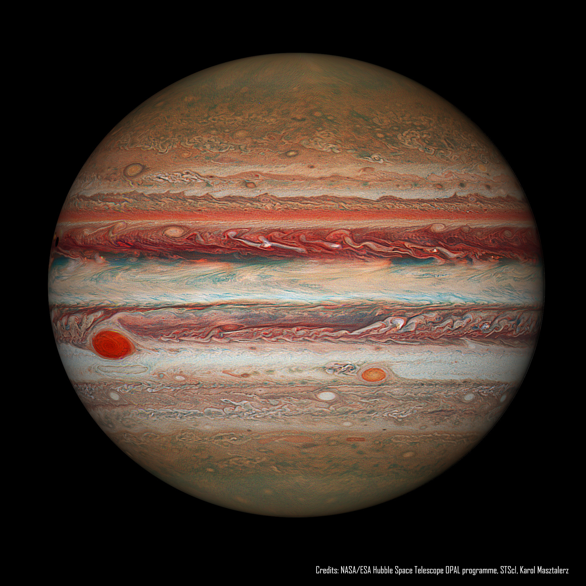

Nombre |
Información |
JUPITER |
Júpiter es el quinto planeta del sistema solar. Forma parte de los denominados planetas exteriores o gaseosos. Recibe su nombre del dios romano Júpiter (Zeus en la mitología griega). Se trata del planeta que ofrece un mayor brillo a lo largo del año dependiendo de su fase. Es, además, después del Sol, el mayor cuerpo celeste del sistema solar, con una masa casi dos veces y media la de los demás planetas juntos (con una masa 318 veces mayor que la de la Tierra y tres veces mayor que la de Saturno, además de ser, en cuanto a volumen, 1317 veces más grande que la Tierra). También es el planeta más antiguo del sistema solar, siendo incluso más antiguo que el sol; este descubrimiento fue realizado por investigadores de la universidad de Münster en Alemania. |